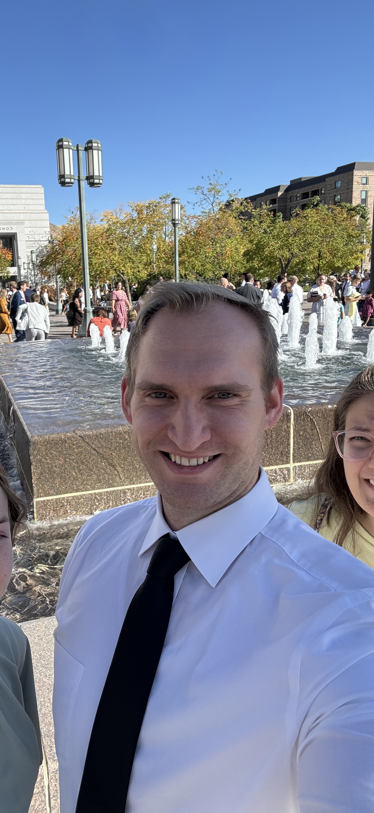
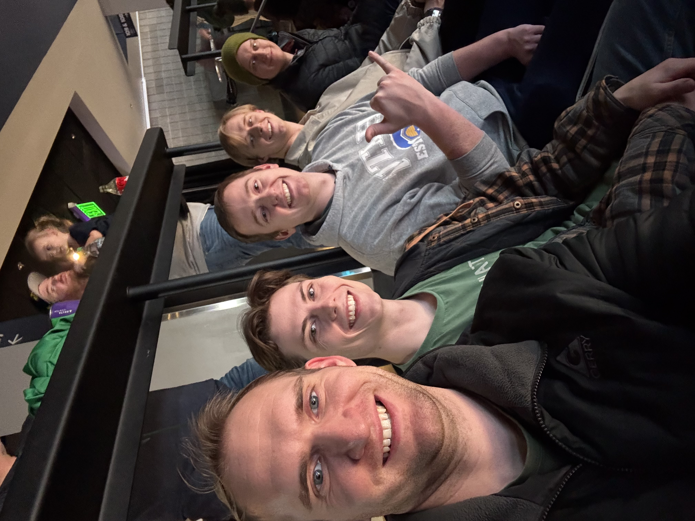
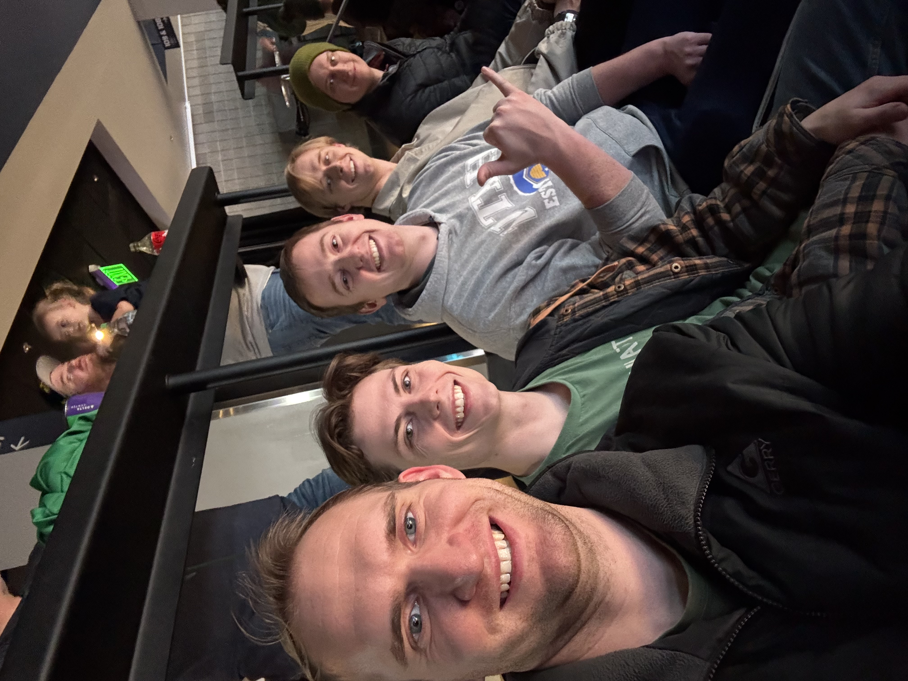

I am Ian Mathews, a graduate student at BYU pursuing a master’s degree in Civil Engineering with a focus on water resource engineering. My life has included experiences as a firefighter, night0-club bouncer, and medical team member for downhill mountain bike tours. These diverse roles have shaped my passion for learning and experiencing new adventures.
My career goals include obtaining my Professional Engineer (PE) license and working on projects to mitigate flooding risks and design sustainable water systems. I aspire to take on leadership roles in the industry, focusing on innovative solutions that benefit both people and the environment. In my free time, I enjoy playing guitar, snowboarding, pickleball, and spending time with friends. Something I am looking forward to in 2025 is a family trip to Italy this summer.
 
